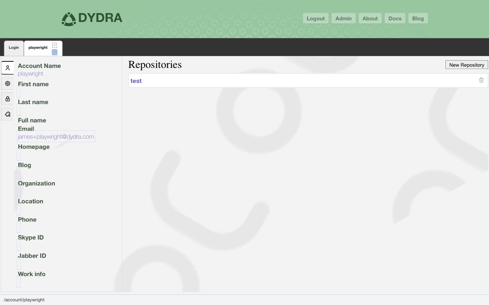

2.1 The Story the System Tells About You
Your account is, in a sense, the story the system tells about you. It holds your name, your email address, the repositories you have built over time, and the credentials that let you work with them. It is worth knowing what is in there — and knowing how to change it when you need to.
An account in Dydra is your identity within the system. It is the name by which others know you, the address at which notifications find you, and the container that holds everything you have created here.
2.2 What You Will See
When you navigate to your account view, the system presents you with a picture of who you are within Dydra:
- Your username — the unique name you chose when you joined
- Your email address, where system notifications are sent
- Your full name, as it appears to others
- A homepage URL and blog URL, if you care to share them
- Your company and geographic location
- The list of repositories that belong to you
2.3 What You Can Change
Most of what is in your account can be updated whenever you like. Here is the full list of fields that are yours to edit:
| Field | What It Holds |
|---|---|
firstname | Your given name |
familyname | Your surname |
fullname | Your full name as a single string |
email | Your email address |
homepage | Your personal website |
blog | Your blog, if you have one |
company | Where you work |
location | Where in the world you are |
phone | A phone number |
skype_id | Your Skype handle |
jabber_id | Your XMPP address |
workinfo | A note about your professional context |
2.4 Updating a Field
Editing your account information is designed to be quick and direct. Here is the flow:

Figure 2.1: A field open for editing after a double-click.

Figure 2.2: The Save button in the tab bar.
2.5 Your Authentication Token
Every account comes with an authentication token — a long, unique string of characters that serves as an alternative to your password. Where passwords are for people, tokens are for programs. If you write scripts that interact with Dydra's API, this is the credential you will use.
2.5.1 Finding Your Token
- Go to your account view
- Scroll to the Token section
- There it is — copy it and keep it somewhere safe
2.5.2 Generating a New Token
If you have reason to think your token has been compromised — or if your security policy calls for regular rotation — you can generate a fresh one:
- Navigate to the Token section in your account view
- Click Reset Token
- A new token appears immediately
- Update any scripts or services that were using the old token — they will need the new one from this point on

Figure 2.3: The token reset control.
2.6 Getting to Your Repositories
From your account view, you can reach everything that belongs to you:
- The full list of your repositories
- The controls to create a new repository
- Individual repository management views
- All the operations that go with them
2.7 More Than One Account at a Time
Here is something that surprises some people when they discover it: you can be signed in to multiple Dydra accounts simultaneously, all within the same browser session. Each account maintains its own independent state — you are not mixing anything together.
This turns out to be useful in more ways than you might expect:
- Managing your personal account alongside an organizational one
- Testing access across different permission levels
- Verifying that data is visible from another account's perspective
2.8 If Something Is Not Working
2.8.1 Save Did Not Seem to Take Effect
- Make sure you actually clicked Save — it is easy to think you did without quite doing it
- Look for any error message the application might be showing you
- Confirm you have permission to modify this account
- Check that your network connection is alive
2.8.2 The Token Is Not Showing Up
- Make sure you are looking at the right account
- Try refreshing the browser
- Verify that you have the access rights needed to see the token
2.9 Where to Go Next
With your account in order, you are ready for the real work:
- Creating and managing repositories — Chapter 3
- Importing and exporting data
- Building SPARQL views — Chapter 4
- Practical habits and best practices — Chapter 5
Chapter 3 is where the data work really begins. Shall we?